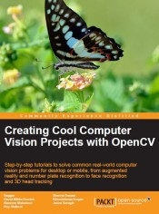

A bunch of news about book, research and life
Hi friends! the summer has ended and schools and universities has opened their doors in front of new students. Since i graduated few years ago i still remember good old times of study. Doh. I’m to so old yet :) So, on 1st September i decided to share with you about my plans for next three months. Because i scheduled very interesting activities for this autumn.
OpenCV Hotshots
Yes it is. The first book i participated will be published this Autumn. I hope so. I did my best to finish my part right in time. There are two chapters already available from the Packt Publishing (http://www.packtpub.com/opencv-2-hotshot/book).
Marker-based Augmented Reality on iPhone or iPad
In this chapter we will create a AR application for iPhone/iPad devices. Starting from scratch wecreate an application that uses markers to draw some artificial objects on the acquired images for camera. You will learn how to setup a project in XCode IDE project, configure it to use OpenCV within your application. Also, such aspects as capturing a video from built-in camera, 3D scene rendering using OpenGL ES and building of a common AR application architecture are going to be explained.
Marker-less Augmented Reality
Readers will learn how to create a standard real-time project using OpenCV (for desktop), and how to perform a new method of marker-less augmented reality, using the actual environment as the input instead of printed square markers. This chapter will cover some theory of marker-less AR and show how to apply it in useful projects. Publisher allowed me to publish source code for both chapters on the GitHub. They are freely available:
I will try to listen and react your feedback as fast as possible. So feel free to send your suggestions and bug fixes (i hope they won’t happen). To interest you even more, i made very short video showing you augmented reality on top of the image pattern. This demonstration is done using OpenCV and Ogre3D libraries. In third chapter of “OpenCV Hotshots” i explain algorithm of pattern detection. In this video a image pattern was used a a target for animated 3D model. From chapter 3 you will learn how to make your own markerless AR application.
Feature descriptors comparison report
I will continue my research of comparison of different feature descriptors including but not limited to SURF, SIFT, BRIEF, ORB, BRISK and FREAK. Feature descriptors are widely used for object detection, image stitching and stabilisation, match-moving and structure from motion estimation. I do research to let you know area of appliance of each descriptors extraction algorithm. In the near future i hope to find a time to publish detailed comparison report of all OpenCV feature descriptors. Probably i will wait for OpenCV 2.5 release and then run my test benchmark and generate nice diagrams. From the other side i also curious about parameters optimisation of particular algorithm in terms of improving it’s robustness and detection ratio. It’s quite big amount of job, but i had experience in my past (LAZY descriptor has been optimized in similary way). All development will be published at GitHub (You already following my, have you?): https://github.com/BloodAxe/OpenCV-Features-Comparison.
OpenCV Tutorial
A great way to start learning OpenCV development on iOS platform. There is a [roadmap][6] of the development. Part 7 is almost finished. I hope to publish parts 8 and 9 before winter. I want to say thanks for Anton Belodedenko and Emmanuel d’Angelo. They were first who brought new samples in the this project. I was really surprised of their help. Thanks guys!
In case you missed it. All sources on Github: https://github.com/BloodAxe/OpenCV-Tutorial
Step-by-step tutorials
Part 1 - Introduction
The first part of the tutorial - in this part we setup a base XCode project for our application and define a base interface of our samples.
Part 2 - Writing a base UI
In the second part we created a basic user interface for displaying registered samples using master-detail paradigm and created two samples: edge and contour detection.
Part 3 - Video and image processing
In this part the video and image processing logic was written. We created necessary UI to present result of image processing.
Part 4 - Correction of mistakes
The four part of the tutorial was dedicated to fixing annoying bugs with video orientation and improvements of application performance. The optimized color conversion algorithm was added to increase overall frame processing speed. A new feature was added too - users now can save processed images to photo album.
Part 5 - Adding options
Options! Options! Options! In this part i will add adjustable options to our samples and create a UI to adjust them. Options will be supported for both image and video processing. From this sample you’ll learn how to bind to C++ data types from objective C code and create specific user controls depending on type of bound variable. Also we will use popover controllers to present options on iPad devices and flip animation to show options on iPhone. In addition, a “Edge Detection” sample will now has four algorithms to find edges. You’ll be able to toggle between them using options view and see the difference.
Part 6 - Social interaction
In this part i going to to add twitter integration to give you an ability to post your processed images and share them using twitter. Second feature that i will add - video recording. You’ll be able to record a video from the processed frames to and share it too.